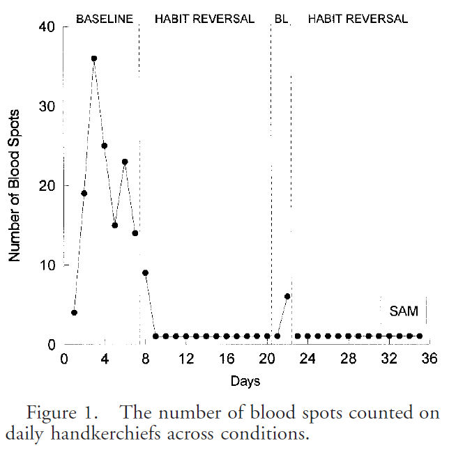

Experimentation without randomization of individual patients
Introduction
They say that randomized control trials are easy. Hand out drugs or placebos based on a coin flip, wait three years and count the number of dead bodies in each group. Well, maybe it is not that easy, but the methodology is well established.
Randomization of individual patients is considered the gold standard of research. Any time you have sufficient control to select who gets the treatment and who gets the control, you should always consider individual randomization when planning a study.
Randomization prevents covariate imbalance, both among measured and unmeasured covariates. Patients who are only mildly ill are allocated more or less evenly between the treatment and control group. patients who are terrible about showing up at their monthy evaluations are allocated more or less evenly. Patients who brush their teeth obsessively three or four times a day are allocated more or less evenly.
There are times, however, when you should reject individual randomization in favor of some non-randomized alternatives. I’m a professional statistician and it may seem to you like a betrayal of everything I’ve learned. I’m sorry if you feel that way, but I do strongly believe that sometimes (but only sometimes) abandoning randomization is the best course of action.
Randomization is not all it’s cracked up to be. Randomization is expensive. You have to set up an elaborate logistical framework to implement randomization. Skip all that stuff and you can get a larger sample size for the same amount of research funding.
Randomization is unpopular. People who provide dental care don’t want to randomly switch back and forth between two different treatment protocols.
Randomization is unnatural. You are used to giving advice about dental care in an assured voice that lets your patients know that your recommendations are based on sound science. When you randomize, you lose this level of assurance and admit that you are leaving their treatment choice up to the flip of a coin.
Finally, there are some settings where randomization is just flat out impossible. You want to see the how a new training program helps your patients. Once you take the training, you can’t unremember it for half of your upcoming patients.
Yes, there are workarounds for some of the limitations of randomization. Nevertheless, you will find at times that it makes more sense to abandon randomization altogether and use a different approach for allocating patients to the treatment and control groups.
The infamous historical control
The simplest way you can avoid randomization is to give everyone who comes to you the new treatment and rummage around in some database for historical records from patients without the new treatment. This is often called a historical control design or a before and after design.
Most researchers sneer at historical control designs. Historical controls have indeed been some absolute research disasters. In his book, Observational Studies, Paul Rosenbaum talks about a study conducted by Linus Pauling using large doses of Vitamin C in terminal cancer patients. Dr. Pauling, a physicist, was so convinced of the benefits of Vitamin C that he did not want to deny this treatment to anyone. So he treated every one of his research volunteers found some historical records to use as a control group. The study showed a huge benefit to Vitamin C therapy, but did not pan out when replicated using a randomized design. Dr. Pauling’s patients had very poor future ahead of them, having been diagnosed with terminal cancer. But then Paul Rosenbaum wryly notes that “one can say with total confidence, without reservation or caveat, that the prognosis of the patient who is already dead is not good.”
Rosenbaum, Paul. Observational Studies. 1995 Spring Science+Business Media new York.
Nevertheless, you will see historical control designs in the literature. One study (Nishi 2023) compared the treatment with low-level laser therapy of 21 patients with Oral Mucositis from December 2022 to September 2023 to 96 control patients recruited from another study (Ohbayashi 2021) conducted from August 2009 to December 2019.
Hiromi Nishi, Susumu Horikoshi, Tetsumi Yoshida, Noriyasu Fukushima, Kyoko Oshita, Syuichi Munenaga, Taro Edahiro, Hiroshi Ureshino, Hideo Shigeishi, Yukio Yoshioka, Masaru Konishi, Noriaki Ide, Yuma Ogawa, Rikou Marukawa, Tomoaki Shintani, Natumi Ino, Mikihito Kajiya, Naoya Kakimoto, Hiroki Ohge, Tatsuo Ichinohe, and Hiroyuki Kawaguchi. Efficacy of Low-Level Laser Therapy for Oral Mucositis in Hematologic Patients Undergoing Transplantation: A Single-Arm Prospective Study. J Pers Med. 2023 Nov; 13(11): 1603. doi: 10.3390/jpm13111603. PMCID: PMC10672422. PMID: 38003918.
Ohbayashi Y, Imataki O, Uemura M, Takeuchi A, Aoki S, Tanaka M, Nakai Y, Nakai F, Miyake M. Oral microorganisms and bloodstream infection in allogeneic hematopoietic stem cell transplantation. Clin Oral Investig. 2021 Jul;25(7):4359-4367. doi: 10.1007/s00784-020-03749-9. PMID: 33392808.
Can you compare 2022-2023 patients with those recruited 3 to 14 years earlier? Apparently with enough credibility to warrant a call for “development of comprehensive national guidelines, initiation of randomized comparative trials, and the establishment of collaborative research networks among international healthcare institutions.”
You might be a bit more cautious. Even so, there are times when a comparison to historical controls is called for. If you are examining a serious condition that hurts everyone it touches, and there is no proven remedy available, then by all means give any new treatment with any hope to everyone who comes to see you. If that treatment shows any improvement over a historical failure rate of 100%, that will be so patently obvious that you don’t need a concurrent control.
For situations not quite so stark, the historical control does not fare as well. The problem with historical controls is that they fail to account for temporal trends unrelated to your therapy. If you notice a change in the quality of care provided between 2019 and 2020, is that due to the intervention you’ve been testing or is it due to the many changes in care produced by the COVID pandemic?
A similar problem occurs when your control group is separated from your treatment group not by time but by clinic. A study of tube-feeding in dysphagia patients (Su 2022) compared 23 patients getting a thickened water treatment at one neurology unit of a hospital to 23 patients getting standard care at a different neurology unit of the same hospital. The treatment and control were administered during the same time frame (March to December of 2021), but the treatment and control patients were geographically separated into different clinics. It was the same hospital, and the authors have assured you that “medical and nursing conditions were very similar between the two units.” Indeed a table in the paper shows that the demographic features of patients in the two units are similar. If you still have some lingering concerns, though, about differences in the two units, you are not alone.
You can improve the credibility of studies where the treatment and control groups are separated by time or distance. These do not require all the problems associated with randomization, but they can provide evidence that is almost as persuasive. The key is to look at more than many different time points, look at many different components of your intervention, or look at many different physical locations.
Withdrawal design
Can you withdraw a treatment after you apply it. That won’t work for training interventions. You can’t unlearn something. Some interventions, like a remodel in the physical layout of a clinic, require to much time and expense to be undone. But when you can withdraw a treatment, you have a very powerful way to demonstrate its effectiveness.
In awithdrawal design (sometimes called the ABA design) you start with a control (A), switch to a treatment (B) and then switch back to your control.
A very simple illustration of this is described in Philip Zimbardo’s book about his infamous prisoner experiments.
The Lucifer Effect: Understanding How Good People Turn Evil, by Philip Zimbardo.
He described an experiment (not his infamous prison experiment) that used a withdrawal design. A researcher wanted to show how anonymity increases the tendency to engage in violent and aggressive actions.
He set up an experiment with school children at a Halloween party and found a simple and clever way to measure their aggressive and competitive behavior. This was assessed at the start of the party, before anyone had donned their costumes. Then the children were asked to put on their costumes. The masks gave the a fair degree of anonymity. Aggression was measured again and it rose.
But maybe the kids just got rowdier as time wore on. The researchers had an answer to this objection. They evaluated aggression a third time, after asking the children to remove their costumes. When average aggression levels returned to the level seen at first time point, they could rule out the possibility that some other temporal trend, such as a change induced by the increasing amount of sugar and candy consumed during the party.
Perhaps you can still raise an objection. What if children were like werewolves? They were calm while a full moon was hidden behind clouds, went wild while the full moon emerged from behind the clouds, and then calmed back down when the clouds covered the moon again.
Well, maybe, but most temporal trends are either a sudden jump or a continual upward or downward trend.
You can provide even more credibility with a few simple adaptations. Start with the control, add an intervention, withdraw it, and then add it back again. This is an ABAB design and makes it even harder to cite a moon behind clouds alternative explanation. It would be very strange that the clouds would synchronize with the donning and removal of Halloween masks.
A study of self-biting (Jones 1997) illustrates this ABAB design in a single patient. a 15 year old boy had serious behavioral issues including biting his lips hard enough to draw blood. The researchers wanted to test a relaxation therapy and measured lip bleeding before and after implementation of the new therapy. This by itself would be a historical control study. How do you know that the problem wasn’t just a problem that goes away over time? The researchers checked this by stopping the relaxation therapy. When the patient reverted to lip biting, the relaxation therapy was re-introduced. Self-biting stopped again, much to the delight of the patient and the researchers.

Interrupted time series
Phased design
Stepped wedge design
Regression discontinuity design
http://www.pmean.com/news/201201.html
–> Some quasi-experimental alternatives to randomization. There are many situations where you can’t use randomization. When you have absolutely no control over the intervention at all, you use what is typically called an observational study, such as a cohort, case-control, cross-sectional, or historical control study. There’s a gray area, however, between observational studies and randomized studies where you have some level of control over the intervention, but not enough control to randomize. These settings occur quite often in quality improvement studies, and the class of designs used are referred to as quasi-experimental designs.
Below is a schematic graph of a randomized experiment. You take a group of 100 patients and randomly assign 50 of them to the treatment and 50 to the control. The red letter C represents the mean of the 50 control subjects and the green letter T represents the mean of the 50 treatment subjects. The means are identical (within sampling error, of course) prior to the intervention (“Pre” on the x axis). After the intervention (“Post” on the x axis), the means differ. The size of this difference in means is the estimated effect of the treatment or intervention.
Schematic graph of a randomized experiment
Now, if you randomize, you really don’t need to take a measurement at baseline.
Schematic graph of a randomized experiment without baseline
Randomization assures comparability, so any difference seen must be due to the intervention. Now getting a baseline measurement is always a good idea, even in a randomized experiment because it offers an important quality check of the success of the randomization, and having a baseline can improve precision. For non-randomized experiments, of course, you need the baseline, because imbalances at baseline can produce an atefactual response
Schematic graph of baseline imbalance leading to an artefactual response
or can mask a true response
Schematic graph of a baseline imbalance that masks a true response
In many settings, you control when the intervention occurs, but you can’t control it at a fine enough level to allow randomization. For example, you make a change in training or education practices at a hospital. You can’t randomly assign half of the health care professionals to the training. They work in such close proximity that the changes in the trained group will rub off on the control group. Or you change the environment, such as the location of the desk where patients are screened in an emergency room. You can’t randomly shift the desk back to its old spot for half of the arriving patients. So the intervention has to be applied in an all or nothing fashion.
Now you could still randomize if you had ten hospitals, and you randomly select five for your intervention and five for your control group. But it’s hard enough to get a study going at a single hospital, and trying to coordinate at multiple sites is a problem. So what you end up with in many cases is a pre/post design with no concurrent control group.
Schematic graph of a pre/post test design with no concurrent control group
This is a very weak research design, but it is commonly used. If the change you see is very large, if the effect has a solid and scientifically plausible explanation, and if the result is consistent with other studies, then even a weak design like this can have credibility.
There are some good alternatives, however, to a pre/post design with no concurrent control group. A very simple alternative is called the withdrawal design or the ABA design. You make an assessment at T0 while still under the control conditions. Then you switch to the treatment and make an assessment at T1. Then you withdraw the treatment (switch back to the control condition) and make an assessment at T2.
Schematic graph of a withdrawal design
The graph above shows a positive effect in a withdrawal design. You see an improvement when you intervene and that improvement disappears when you withdraw that intervention.
Schematic graph of a withdrawal design
In contrast, this figure shows a negative effect in a withdrawal design. Something else was going on at the time that the intervention occurred because when the intervention was withdrawn, the effect persisted. This is not a perfect method, of course. It is possible that there is a carry-over effect from the intervention that persists even when the intervention is withdrawn.
A simple example of the withdrawal design is described in the book, The Lucifer Effect: Understanding How Good People Turn Evil, by Philip Zimbardo. He described an experiment (not his infamous prison experiment) that used a withdrawal design. A researcher wanted to show how anonymity increases the tendency to engage in violent and aggressive actions. He set up an experiment with school children at a Halloween Party. They had a choice between several games some of which were cooperative and some of which were aggressive and competitive. The children were assessed at the start of the party, before they had donned their costumes. After they had donned their costumes (which were designed to provide them with a high degree of anonymity), they were assessed again. The degree of engagement in aggressive and competitive activities increased when the children had greater anonymity. Now you might think of an alternative explanation for this finding, because maybe the children got wilder as the party went on. To discredit this alternative explanation, they then asked the children to remove their costumes and assessed them a third time. The aggression and competition dropped to the level prior to donning costumes.
The withdrawal design can be extended to have a re-introduction of the intervention after withdrawal (an ABAB design) or an introduction of a second intervention after withdrawal (an ABAC design). These designs are also very common in single subject research designs.
The withdrawal design is a very simple example of using more than one control group in a research design to overcome some of the weaknesses caused by inability to randomize.
Another design used in this setting is the interrupted time series.
Test
Notice that the time series is stable and flat prior to the intervention, shows a jump after the intervention, and then stabilizes again.
Conceptual graph of an interrupted time series
In contrast, the pattern shown above indicates that the change seen after the intervention is just part of a temporal trend that is unrelated to the intervention itself.
The interrupted time series becomes even more effective if you have an intervention that is phased in at several different time points.
Conceptual graph of a phased intervention
Notice in the graph above that the improvements all occur concurrently with the phases of the intervention. It’s possible that one jump might have been associated with a temporal factor unassociated with the intervention, but all three jumps coinciding with all three phases of the intervention?
Another design worth considering is the regression discontinuity design. Suppose we have a baseline measure of severity of illness and this is reasonably predictive of your long-term outcome.
Graph of baseline illness and long term outcome
This graph shows the baseline measure on the horizontal axis and the long-term outcome on the vertical axis. Note that low values on the baseline tend to lead to low values on the long term outcome.
Suppose you could not randomize the intervention, but we could give the intervention only to those patients who were most severely ill at baseline. That means that if you were below a certain threshold would get the intervention and if you were above that threshold, you wouldn’t get the intervention. If the intervention were successful, the outcomes might look something like this.
Graph of intervention applied to all below a threshold
The red X’s represent the treatment group and the green O’s represent the control group. Notice that there is a discontinuity at the threshold.
If you restrict your attention to only those intervention and control patients near the threshold, then you are looking at a group of patients that are all reasonably close to the same baseline value. But the discontinuity (if it exists) will make the intervention group have large values for the long term outcome.
Regression discontinuity design
In this graph, the dashes represent patients with/without the intervention that are not followed for long term follow-up. By looking only at patients very close on either side of the threshold, you get a reasonably fair comparison of the intervention itself. Notice that if we had included all the red dashes, that would have dragged down the intervention mean. Likewise, including all the green dashes would have pulled up the control mean.
None of these designs are perfect. But when you don’t have the option of randomizing half of your patients to a concurrent control group, these designs are all worth considering. They are easy to implement and offer a better alternative than a simple pre/post test design without a concurrent control group.
Quote
“Of course, from the quasi-experimental perspective, just as from that of physical science methodology, it is obvious that moving out into the real world increases the number of plausible rival hypotheses. Experiments move to quasi-experiemtns and on into queasy experiments, all too easily.” Donald T. Campbell, in Methodology and Epistemology for Social Science: Selected Papers, page 322.